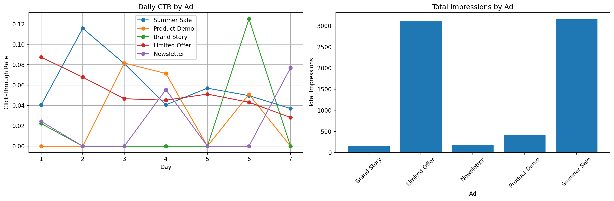

import numpy as np
import pandas as pd
import matplotlib.pyplot as plt
import seaborn as sns
from datetime import datetime, timedelta
from typing import List, Dict
class Ad:
def __init__(self,
ad_id: str,
true_ctr: float,
decay_rate: float = 0.0):
"""
Initialize an ad with its true CTR and optional decay rate.
Args:
ad_id: Unique identifier for the ad
true_ctr: True click-through rate
decay_rate: Daily decay rate of CTR (simulates ad fatigue)
"""
self.ad_id = ad_id
self.base_ctr = true_ctr
self.decay_rate = decay_rate
self.start_time = datetime.now()
def get_click(self, current_time: datetime) -> bool:
"""Simulate if a user clicks based on current CTR."""
days_active = (current_time - self.start_time).days
current_ctr = self.base_ctr * (1 - self.decay_rate) ** days_active
return np.random.random() < current_ctr
# Create sample ads with different CTRs and decay rates
ads = [
Ad("Summer Sale", 0.08, 0.1), # High initial CTR, fast decay
Ad("Product Demo", 0.05, 0.05), # Medium CTR, medium decay
Ad("Brand Story", 0.03, 0.02), # Low CTR, slow decay
Ad("Limited Offer", 0.07, 0.15), # High CTR, very fast decay
Ad("Newsletter", 0.04, 0.01) # Medium-low CTR, very slow decay
]Introduction
Imagine you’re running a website with multiple ad variants. Which ad should you show to maximize clicks? This is a perfect application for the multi-armed bandit (MAB) algorithm. In this post, we’ll build a practical ad selection system using MAB, complete with:
- Simulated user behavior
- Click-through rate (CTR) optimization
- Real-time learning and adaptation
- Performance visualization
The Ad Selection Problem
When a user visits your website, you have milliseconds to decide which ad to show. Each ad has an unknown click-through rate, and your goal is to:
- Find the best-performing ads (exploration)
- Show the best ads more frequently (exploitation)
- Adapt to changing user preferences over time
Let’s implement this scenario:
Implementing the Bandit Algorithm
We’ll use a Thompson Sampling approach, which is well-suited for online advertising because it:
- Balances exploration and exploitation naturally
- Handles uncertainty well
- Adapts quickly to changing conditions
class AdBandit:
def __init__(self, ad_ids: List[str]):
"""
Initialize the bandit algorithm with Beta distributions for each ad.
Args:
ad_ids: List of ad identifiers
"""
self.ad_ids = ad_ids
# Beta distribution parameters for each ad
self.alphas = {ad_id: 1.0 for ad_id in ad_ids}
self.betas = {ad_id: 1.0 for ad_id in ad_ids}
# Track performance
self.impressions = {ad_id: 0 for ad_id in ad_ids}
self.clicks = {ad_id: 0 for ad_id in ad_ids}
def select_ad(self) -> str:
"""Select an ad using Thompson Sampling."""
samples = {
ad_id: np.random.beta(self.alphas[ad_id], self.betas[ad_id])
for ad_id in self.ad_ids
}
return max(samples.items(), key=lambda x: x[1])[0]
def update(self, ad_id: str, clicked: bool):
"""Update the model based on whether the user clicked."""
self.impressions[ad_id] += 1
if clicked:
self.clicks[ad_id] += 1
self.alphas[ad_id] += 1
else:
self.betas[ad_id] += 1
def get_ctr(self, ad_id: str) -> float:
"""Calculate click-through rate for an ad."""
if self.impressions[ad_id] == 0:
return 0.0
return self.clicks[ad_id] / self.impressions[ad_id]Running a Simulation
Let’s simulate a week of ad serving with 1000 visitors per day:
def run_simulation(ads: List[Ad],
bandit: AdBandit,
days: int = 7,
visitors_per_day: int = 1000) -> pd.DataFrame:
"""
Run a simulation of ad serving and track performance.
Returns:
DataFrame with daily performance metrics
"""
results = []
start_time = datetime.now()
for day in range(days):
current_time = start_time + timedelta(days=day)
daily_impressions = {ad.ad_id: 0 for ad in ads}
daily_clicks = {ad.ad_id: 0 for ad in ads}
for _ in range(visitors_per_day):
selected_ad_id = bandit.select_ad()
selected_ad = next(ad for ad in ads if ad.ad_id == selected_ad_id)
clicked = selected_ad.get_click(current_time)
bandit.update(selected_ad_id, clicked)
daily_impressions[selected_ad_id] += 1
if clicked:
daily_clicks[selected_ad_id] += 1
# Record daily results
for ad in ads:
results.append({
'day': day + 1,
'ad_id': ad.ad_id,
'impressions': daily_impressions[ad.ad_id],
'clicks': daily_clicks[ad.ad_id],
'ctr': daily_clicks[ad.ad_id] / daily_impressions[ad.ad_id]
if daily_impressions[ad.ad_id] > 0 else 0
})
return pd.DataFrame(results)
# Run simulation
bandit = AdBandit([ad.ad_id for ad in ads])
results_df = run_simulation(ads, bandit)
# Plot results
plt.figure(figsize=(15, 5))
# Daily CTR by ad
plt.subplot(1, 2, 1)
for ad_id in results_df['ad_id'].unique():
ad_data = results_df[results_df['ad_id'] == ad_id]
plt.plot(ad_data['day'], ad_data['ctr'], 'o-', label=ad_id)
plt.xlabel('Day')
plt.ylabel('Click-Through Rate')
plt.title('Daily CTR by Ad')
plt.legend()
plt.grid(True)
# Total impressions by ad
plt.subplot(1, 2, 2)
total_impressions = results_df.groupby('ad_id')['impressions'].sum()
plt.bar(total_impressions.index, total_impressions.values)
plt.xlabel('Ad')
plt.ylabel('Total Impressions')
plt.title('Total Impressions by Ad')
plt.xticks(rotation=45)
plt.tight_layout()
plt.show()
Analyzing the Results
Let’s calculate some key performance metrics:
# Calculate overall performance metrics
performance_df = pd.DataFrame({
'Ad': results_df['ad_id'].unique(),
'Total Impressions': results_df.groupby('ad_id')['impressions'].sum().values,
'Total Clicks': results_df.groupby('ad_id')['clicks'].sum().values,
'Overall CTR': results_df.groupby('ad_id').apply(
lambda x: x['clicks'].sum() / x['impressions'].sum()
).values
})
performance_df = performance_df.sort_values('Overall CTR', ascending=False)
performance_df.style.format({
'Overall CTR': '{:.2%}',
'Total Impressions': '{:,.0f}',
'Total Clicks': '{:,.0f}'
})/var/folders/nq/y2lyg7p15txfm5ksrw6f90340000gn/T/ipykernel_59721/2762817216.py:6: DeprecationWarning:
DataFrameGroupBy.apply operated on the grouping columns. This behavior is deprecated, and in a future version of pandas the grouping columns will be excluded from the operation. Either pass `include_groups=False` to exclude the groupings or explicitly select the grouping columns after groupby to silence this warning.
| Ad | Total Impressions | Total Clicks | Overall CTR | |
|---|---|---|---|---|
| 4 | Newsletter | 3,156 | 184 | 5.83% |
| 1 | Product Demo | 3,102 | 179 | 5.77% |
| 3 | Limited Offer | 417 | 16 | 3.84% |
| 2 | Brand Story | 176 | 5 | 2.84% |
| 0 | Summer Sale | 149 | 3 | 2.01% |
Key Insights and Implementation Tips
When implementing this system in production, consider:
- Cold Start Problem
- Start with a short exploration period for new ads
- Use prior knowledge (e.g., similar ad performance) for initial estimates
- Contextualization
- Extend the model to consider user segments
- Include time-of-day effects
- Account for seasonal variations
Here’s how to add basic contextualization:
class ContextualAdBandit:
def __init__(self, ad_ids: List[str], contexts: List[str]):
"""
Initialize contextual bandit with separate models per context.
Args:
ad_ids: List of ad identifiers
contexts: List of context identifiers (e.g., ['mobile', 'desktop'])
"""
self.bandits = {
context: AdBandit(ad_ids)
for context in contexts
}
def select_ad(self, context: str) -> str:
"""Select an ad based on the current context."""
return self.bandits[context].select_ad()
def update(self, context: str, ad_id: str, clicked: bool):
"""Update the model for the given context."""
self.bandits[context].update(ad_id, clicked)
# Example usage:
contexts = ['mobile', 'desktop']
contextual_bandit = ContextualAdBandit([ad.ad_id for ad in ads], contexts)Implementation Guidelines
- System Architecture
# Pseudocode for production implementation
class AdServer:
def __init__(self):
self.bandit = ContextualAdBandit(...)
self.cache = RedisCache(...)
async def select_ad(self, user_context):
# Get user context features
context = self.extract_context(user_context)
# Select ad using bandit
selected_ad = self.bandit.select_ad(context)
# Log impression
await self.log_impression(selected_ad, context)
return selected_ad
async def log_click(self, ad_id, context):
# Update model
self.bandit.update(context, ad_id, clicked=True)
# Log to analytics
await self.log_to_analytics(...)- Monitoring Metrics
- CTR by ad and context
- Exploration rate
- Model convergence
- System latency
- Failing Gracefully
- Maintain a fallback ad selection strategy
- Cache recent model states
- Implement circuit breakers
Conclusion
Multi-armed bandits provide an elegant solution to the ad selection problem, combining:
- Automatic optimization of ad performance
- Real-time learning and adaptation
- Scalable implementation options
- Clear performance metrics
Consider starting with a simple implementation and gradually adding complexity as you validate the approach with real traffic.
References
- Chapelle, O., & Li, L. (2011). An empirical evaluation of thompson sampling. Advances in neural information processing systems, 24.
- Li, L., Chu, W., Langford, J., & Schapire, R. E. (2010). A contextual-bandit approach to personalized news article recommendation.